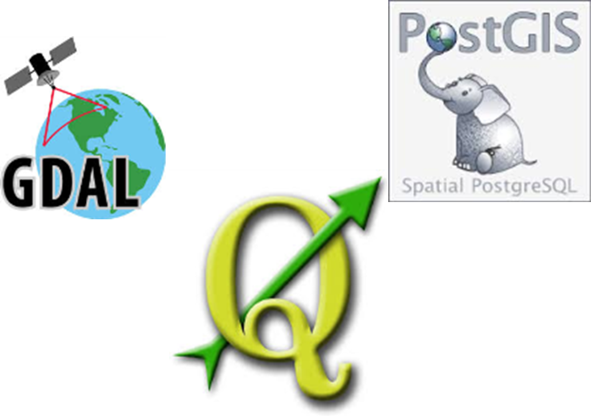

Frie Data i en Minecraft Verden
Danmark i Minecraft - et geosocialt eksperiment
Simon Kokkendorff, Thorbjørn Nielsen og Signe Egmose, Geodatastyrelsen
Minecraft er et enormt populært 'sandkasse-spil' med millioner af registrerede brugere.
Fra minecraft.net :
“ Minecraft is a game about breaking and placing blocks. At first, people built structures to protect against nocturnal monsters, but as the game grew players worked together to create wonderful, imaginative things…”
Typisk autogenereret Minecraft-landskab
Ideen
Hvad nu hvis vi kunne lave en Minecraft-verden af vores egne geodata?
- Minecraft ville blive til et 3D GIS-system med flere brugere end alle andre GIS-systemer tilsammen!
- Vi ville nå ud til en helt ny skare af brugere.
- Masser af anvendelsesmuligheder (undervisning, borgerinddragelse, databehandling?)
- Men er vores frie geodata gode nok til at skabe en virtuel verden der 'ligner'?
Projektet
I starten et fritidsprojekt for Thorbjørn og mig.
- Vores funktionsleder, Nynne Dalå, fik promoveret ideen internt i GST.
- Det gik godt! Blev formaliseret som et officielt GST-projekt med forankring i FOB - Signe Egmose projektleder.
- Fokus på anvendelser i undervisning.
- Og fokus på frie data!
Generering af modellen
Brugte en række open source komponenter og en smule python og c-kode.
def get_next_name(ws_name):
conn = psycopg2.connect(dbstr)
curstring = "select * from admin.mcmaster where status is null order by priority"
cur = conn.cursor()
cur.execute(curstring)
myquery=cur.fetchone()

Store datamængder...
- Paralleliseret produktionssystem med central database
- Spin off til andre projekter, f.eks. processering af højdemodel
Projektet lanceres - it's alive!
- Lanceres d. 24 april
- Fra starten stor medieinteresse!
- Serverne og adminstratorne (os) kan ikke følge med!
- Våbenkapløb med 'griefere'
Griefere
Folk med destruktiv in-game opførsel.
- Ødelægger andres byggerier.
- Forsøger at crashe serverne.
Geodata som socialt medie
Folk flytter 'ind i modellen', bor i deres virtuelle huse eller hænger bare ud og chatter med andre spillere.
Men først og fremmest bygger folk fra hele verden fantastiske og mærkværdige konstruktioner.
Flow-hotellet, Vesterport
En succeshistorie
- Ca. 37.000 unikke besøgende på vores servere.
- Danmark downloadet et utal af gange fra download.kortforsyningen.dk
- Fokus på frie geodata.
- Åbent for anvendelser i f.eks. undervisning.
- Og hvad med andre game engines?
Nytteværdi
- Hvilken nyttværdi:
Gør geodata, og forståelsen heraf, tilgængelig for et nyt, meget bredt publikum.
- Hvorfor:
Minecraft kan bruges som et intuitivt GIS-system med en entutiastisk brugerskare - f.eks. skoleelever
som ikke nødvendigvis er 'bogligt' stærke.
- Hvem:
Borgere som ikke er professionelle GIS-brugere (herunder skolebørn) og myndigheder/firmaer som ønsker at nå ud til denne brugerskare.